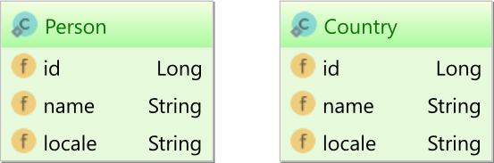

JPA 查询允许您获取实体或 DTO 投影 。但是，有时需要一个组合的结果集。
假设我们有下面两个实体：
@ManyToOne 进行关联。但是，两个实体共享一个 locale 属性，我们可以使用它来在两者之间形成连接。
考虑我们将做下面的 DTO 的映射：
1 2 3 4 5 6 7 8 9 10 11 12 13 14 15 16 17 18 19 20 21 public class PersonAndCountryDTO private final Person person; private final String country; public PersonAndCountryDTO ( Person person, String country) this .person = person; this .country = country; } public Person getPerson () return person; } public String getCountry () return country; } }
使用 JPQL 查询大概长这样：
1 2 3 4 5 6 7 8 9 10 List<PersonAndCountryDTO> personAndAddressDTOs = entityManager.createQuery( "select new " + " com.vladmihalcea.book.hpjp.hibernate.query.dto.PersonAndCountryDTO(" + " p, " + " c.name" + " ) " + "from Person p " + "join Country c on p.locale = c.locale " + "order by p.id" , PersonAndCountryDTO.class) .getResultList();
hibernate 生成的 sql 如下：
1 2 3 4 5 6 7 8 9 10 11 12 13 14 15 16 17 18 19 20 21 SELECT p.id AS col_0_0_, c.name AS col_1_0_ FROM Person pINNER JOIN Country c ON ( p.locale = c.locale ) ORDER BY p.id SELECT p.id AS id1_1_0_, p.locale AS locale2_1_0_, p.name AS name3_1_0_ FROM Person pWHERE p.id = 3 SELECT p.id AS id1_1_0_, p.locale AS locale2_1_0_, p.name AS name3_1_0_ FROM Person pWHERE p.id = 4
Hibernate 5.2 实现的 DTO 投影无法在不执行辅助查询的情况下实现 ResultSet 中的 DTO 投影。但是，这对性能非常不利，因为它可能导致 N + 1 查询问题。
Hibernate 6.0 新的 SQM 解析器可能会解决这个问题，
但是，您不仅限于使用 JPA。 Hibernate 提供了许多在标准中没有直接定义的增强功能。其中一个增强功能是 ResultTransformer 机制，它允许您以任何方式自定义ResultSet。
1 2 3 4 5 6 7 8 9 10 11 12 13 14 15 16 17 18 19 20 21 22 23 24 25 26 List<PersonAndCountryDTO> personAndAddressDTOs = entityManager .createQuery( "select p, c.name " + "from Person p " + "join Country c on p.locale = c.locale " + "order by p.id" ) .unwrap( org.hibernate.query.Query.class ) .setResultTransformer( new ResultTransformer() { @Override public Object transformTuple ( Object[] tuple, String[] aliases) return new PersonAndCountryDTO( (Person) tuple[0 ], (String) tuple[1 ] ); } @Override public List transformList (List collection) return collection; } } ) .getResultList();
此查询需要思考两件事：
unwrap 方法用于将 JPA javax.persistence.Query 转换为特定于 Hibernate 的 org.hibernate.query.Query，以便我们可以访问 setResultTransformer 方法。ResultTransformer 附带一个未遵循函数接口语法的旧定义。因此，在这个例子中我们不能使用 lambda。Hibernate 6.0 旨在克服这个问题，因此不推荐使用Hibernate ORM 5.2 ResultTransformer。尽管如此，还是会提供一种替代方案。
运行上述 Hibernate ResultTransformer 查询时，Hibernate 会生成以下输出：
1 2 3 4 5 6 7 8 9 10 11 12 SELECT p.id AS col_0_0_, c.name AS col_1_0_, p.id AS id1_1_, p.locale AS locale2_1_, p.name AS name3_1_ FROM Person pINNER JOIN Country c ON ( p.locale = c.locale ) ORDER BY p.id